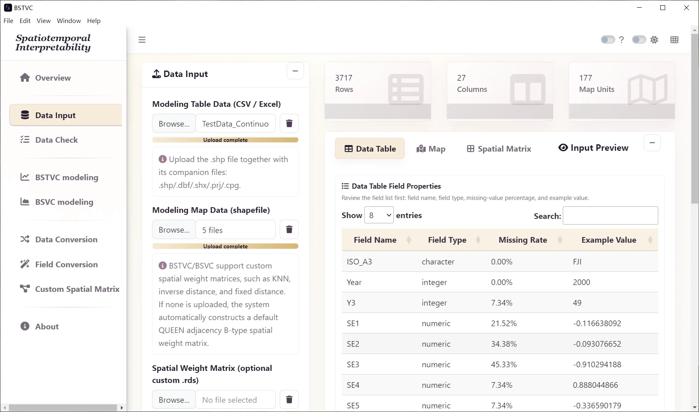
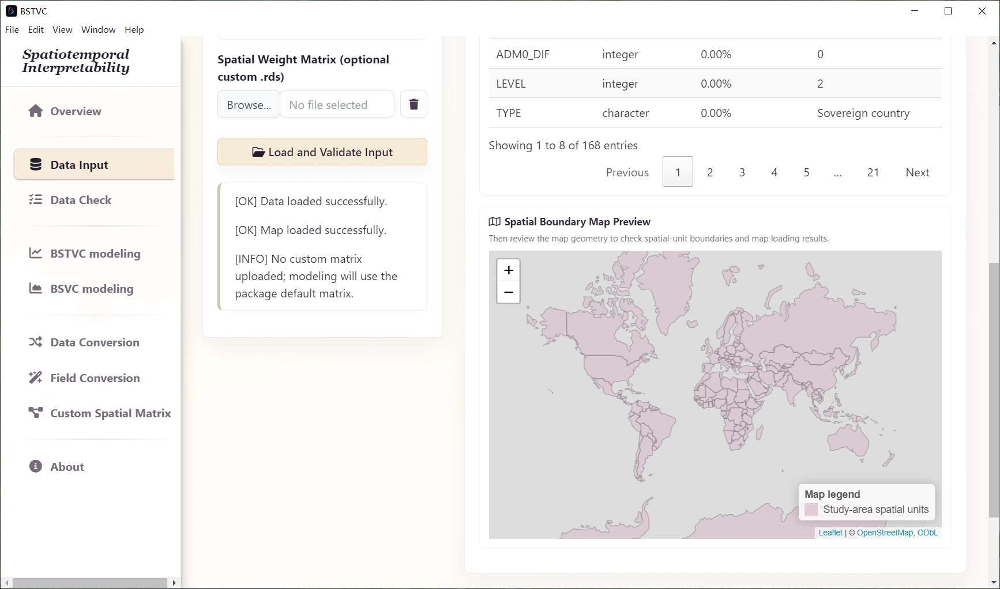
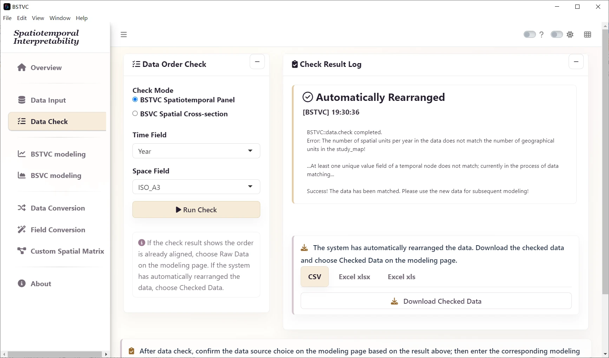
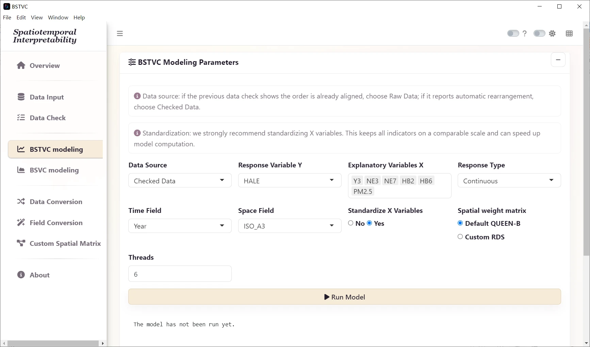
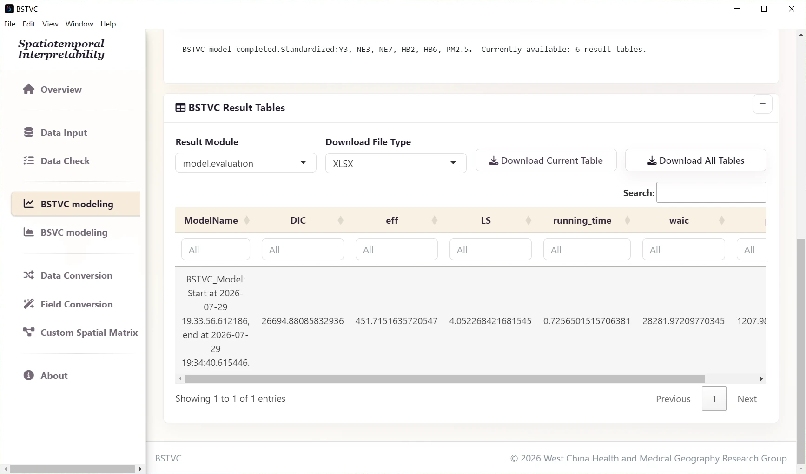
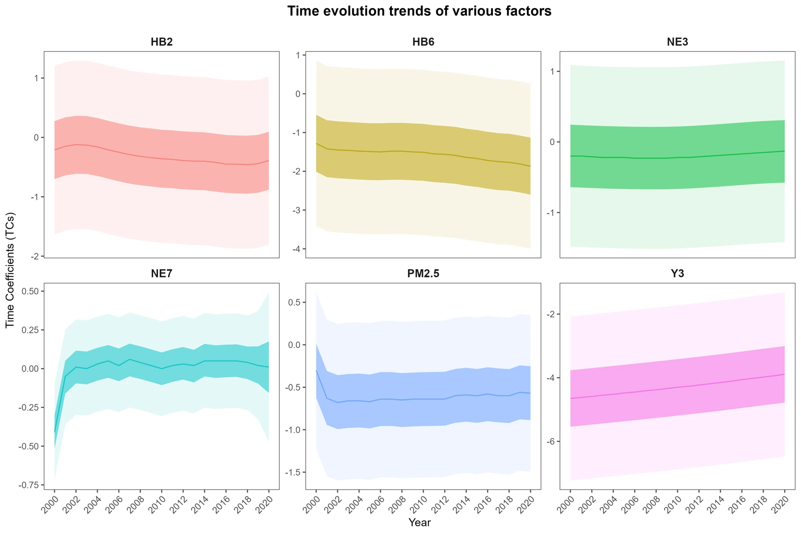
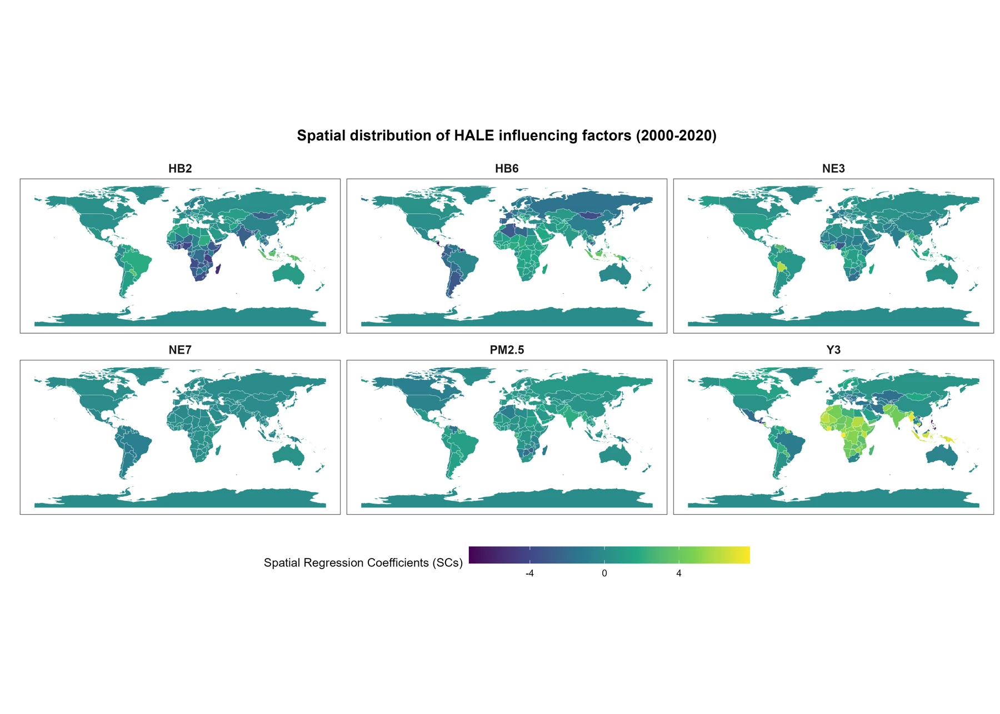
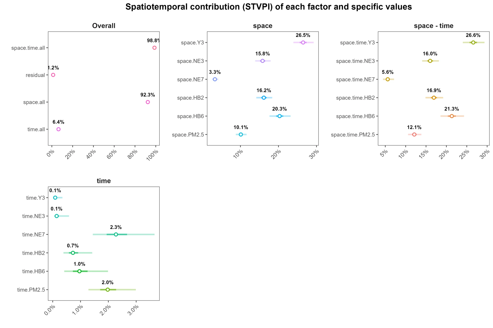
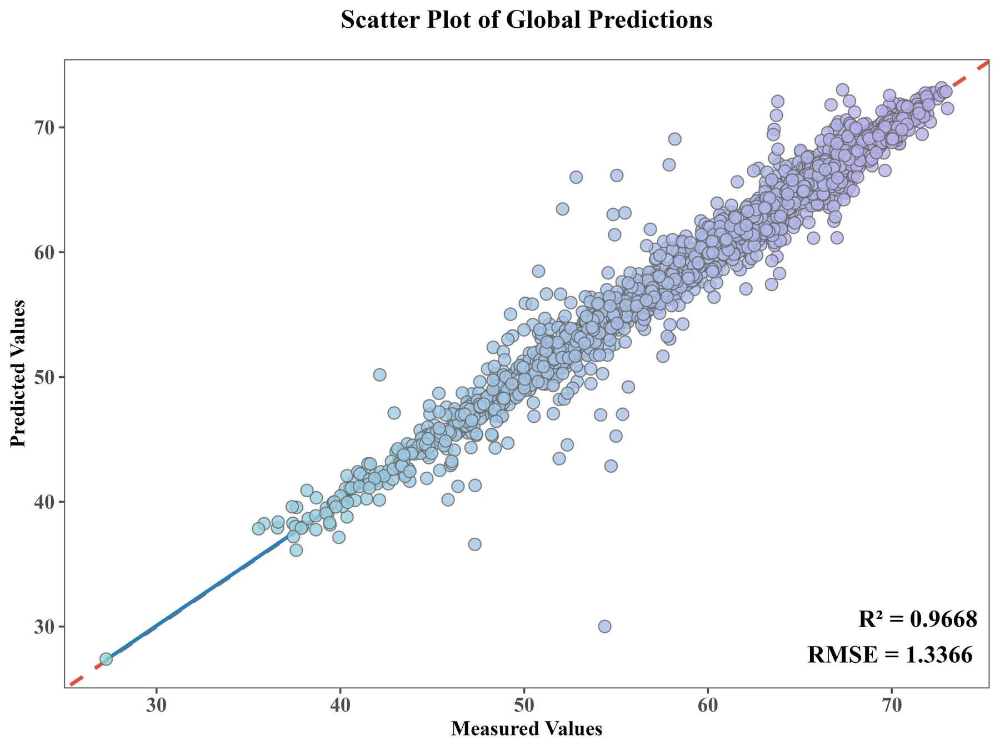
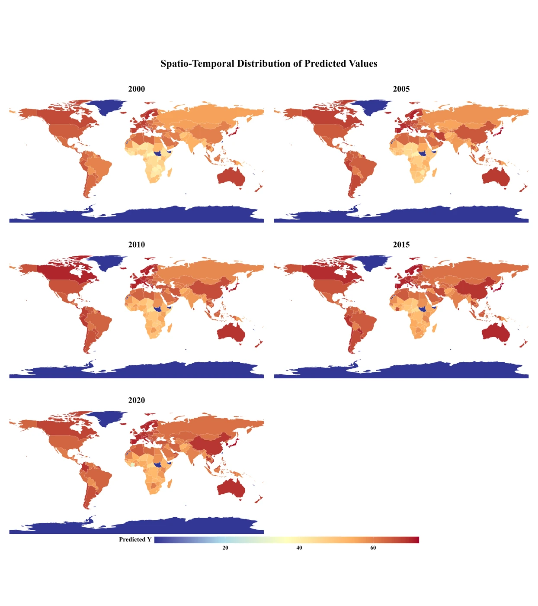

Continuous: global HALE
Follow a log-Gaussian analysis of health-adjusted life expectancy across 177 map units and 21 years.
Know the data
The source case combines global health, socioeconomic, environmental, and behavioral indicators for 2000–2020. The supplied map contains 177 unique spatial identifiers; the CSV contains 3,717 unique location–year records (177 × 21). Its spatial IDs match the map. Sources described in the manual include GBD, GIOVANNI, the World Bank, and air-quality data.
| File / field | Meaning |
|---|---|
| TestData_Continuous.csv | Original panel table; no wide-to-long conversion required |
| TestMap_Continuous.* | Complete world map component set |
| ISO_A3 | Shared map and panel identifier; case sensitive |
| Year | 2000 through 2020 |
| HALE | Health-adjusted life expectancy, the response |
| Y3, NE3, NE7, HB2, HB6, PM2.5 | Six predictors in the introductory model |
The source dictionary identifies Y3 as maternal mortality, NE3 as NDVI, HB2 as high body-mass index, and HB6 as vitamin A deficiency. PM2.5 is an air-pollution indicator. Neither source manual defines NE7, so this guide retains its field code without assigning a name or unit. Several source unit labels are inconsistent, so do not infer measurement units or transformations from those labels alone.
Field dictionary for both HALE models
The Chinese manual provides a broader dictionary for the optional 12-predictor prediction example. The table below brings those definitions into the English guide alongside the six-predictor introductory model. Descriptions and source attributions follow the teaching manual; they are not an independent audit of the original databases.
| Field | Description in the source manual | Source attribution | Use |
|---|---|---|---|
| HALE | Health-adjusted life expectancy | GBD | Outcome in both models |
| Y3 | Maternal mortality indicator | World Bank | Introductory and expanded models |
| NE3 | Normalized Difference Vegetation Index (NDVI) | GIOVANNI | Introductory and expanded models |
| NE7 | Field code retained as supplied | Not defined in either source manual | Introductory model only |
| HB2 | High body-mass index indicator | GBD | Introductory and expanded models |
| HB6 | Vitamin A deficiency indicator | GBD | Introductory and expanded models |
| PM2.5 | Annual population-weighted PM2.5 indicator | Air-quality data cited in the manual | Introductory and expanded models |
| HB1 | High alcohol-use indicator | GBD | Expanded model only |
| NE2 | High-temperature indicator | GBD | Expanded model only |
| SE3 | Female employment-to-population ratio, ages 15 and older | World Bank | Expanded model only |
| SE5 | Urban population share | World Bank | Expanded model only |
| SE6 | Gross national income per person | World Bank | Expanded model only |
| SE7 | Current health expenditure as a share of GDP | World Bank | Expanded model only |
| SE9 | Physicians per 1,000 people | GBD, as attributed in the source table | Expanded model only |
HALE is described in years. Several other unit labels in the source table are inconsistent with their descriptions, and indicator codes do not establish whether values are raw measurements, shares, or transformed estimates. Verify the original data documentation before interpreting a one-unit change or publishing a measurement unit. NE7 is retained as a code without an inferred name or unit.
The missingness figures in the introductory walkthrough are computed from the supplied CSV. Use its actual field properties for analysis; source-table percentages may describe a different subset or rounding convention. For the expanded model, inspect missingness in all 12 selected predictors before fitting.
1. Import and validate
- Open Data Input and use the modeling table Browse control to select
TestData_Continuous.csv. - In the map Browse control, select the complete
TestMap_Continuousshapefile component set. - Leave the custom matrix input empty for the default neighborhood.
- Select Load and Validate Input.
- Review Data Table field properties, types, missing-value ratios, and raw preview. Then review Map field properties and the boundary preview.


2. Check spatial order
- Open Data Check and select the BSTVC spatiotemporal panel check mode.
- Set Time Field to
Yearand Space Field toISO_A3. - Select Run Check and read the log. Confirm the full set of map identifiers has matched.
- If the application reports automatic rearrangement, export the checked table for your records and use Checked Data during modeling. If it reports an already aligned order, use Raw Data.
The original table is organized by location across years. At each time point, the modeling order must match the map order. For example, the supplied map begins FJI, TZA, ESH, CAN, USA. Let Data Check align the input rather than manually sorting identifiers alphabetically.

3. Configure and run the model
| Parameter | Choose |
|---|---|
| Response Variable Y | HALE |
| Explanatory Variables X | Y3, NE3, NE7, HB2, HB6, PM2.5 |
| Response Type | Continuous (log-Gaussian) |
| Time Field | Year |
| Space Field | ISO_A3 |
| Data Source | Raw Data if already aligned; Checked Data if rearranged |
| Standardize X Variables | Yes for the demonstrated comparisons |
| Spatial weight matrix | Default QUEEN-B |
| Threads | 6 as the starting setting |

- Open BSTVC modeling and enter the settings listed above.
- Recheck the response family, time field, spatial field, and Data Source. Do not substitute IDs or time for explanatory variables.
- Select Run Model once and wait for the progress message to finish.
- When the result table appears, select Download All Tables. Save the workbook as
HALE_all_result.xlsxin your case output folder. - Keep the checked input table, map, chosen variables, neighborhood, thread setting, software version, and any error log with that workbook.

4. Read coefficients and contribution
Open model.evaluation first to inspect the completed model and diagnostic measures. Use time.coefficients to examine temporal variation, space.coefficients for geographic variation, and STVPI for model-based contribution with uncertainty.
Display 95% and 50% credible intervals alongside means. A colored spatial coefficient map is a map of a modeled association; it is not a map of causal effects. Read the coefficient-scale guidance before comparing directions or magnitudes.



5. Inspect prediction on the response scale
In local.prediction, y denotes the observed outcome, predict_y the response-scale prediction, and fill_y an outcome field with missing values filled. Continuous model output also contains log-scale summaries. The source workflow already back-transforms the columns with the predict_ prefix: do not exponentiate them again.
Compare observed and predicted values only where both exist. RMSE summarizes error in the response units; R² is relative to a mean-only reference and can be negative. Agreement on the fitted training data is descriptive performance, not independent validation. Use a suitable held-out design for claims about forecasting.


6. Export and continue
You should now have a checked panel, a saved settings record, and a workbook with the six result sections. For customized figures, follow R visualization and select the continuous case configuration. For deeper interpretation, use Understand results. Next, try the binary case to learn monthly wide-table conversion.